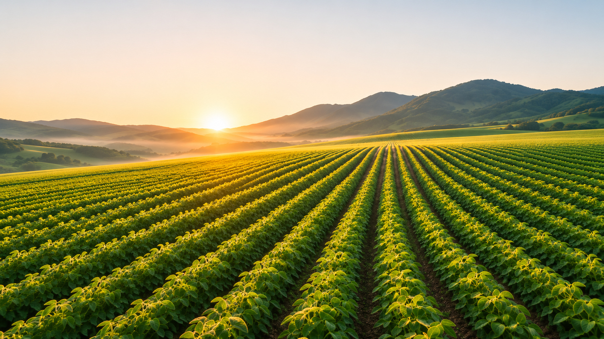

DA INFORMAÇÃO À DECISÃO NO CAMPO
Inteligência para cultivar o futuro.
O AGRION conecta dados ambientais, conhecimento agronômico e inteligência artificial para ajudar agricultores a conhecer sua propriedade e explorar cenários de cultivo.
Do clima ao planejamento, traduzimos informações complexas em uma conversa mais simples sobre o campo.
Conheça nossa propostaUma iniciativa da equipe Space Invaders
NASA Space Apps Challenge 2026
NASA Space Apps Challenge 2026

Dados que aproximam.
Decisões que cultivam.
Decisões que cultivam.
Tecnologia com os pés no campo
Dados ambientais
Conhecimento agronômico
Inteligência artificial
CONHEÇA A IDEIA
Nosso pitch.
O desafio, a proposta e o que queremos
construir para o futuro da agricultura.
Agrion.APRESENTAÇÃO DO PROJETO
Nosso vídeo pitch estará disponível aqui em breve.
Inteligência para cultivar o futuro.SPACE INVADERS
Uma ideia que nasce do campo e olha para o futuro.Abrir vídeo em outra aba
DA PROPOSTA À IMPLEMENTAÇÃO
Código do projeto.
Código-fonte e arquitetura do AGRION
para avaliação técnica da proposta.